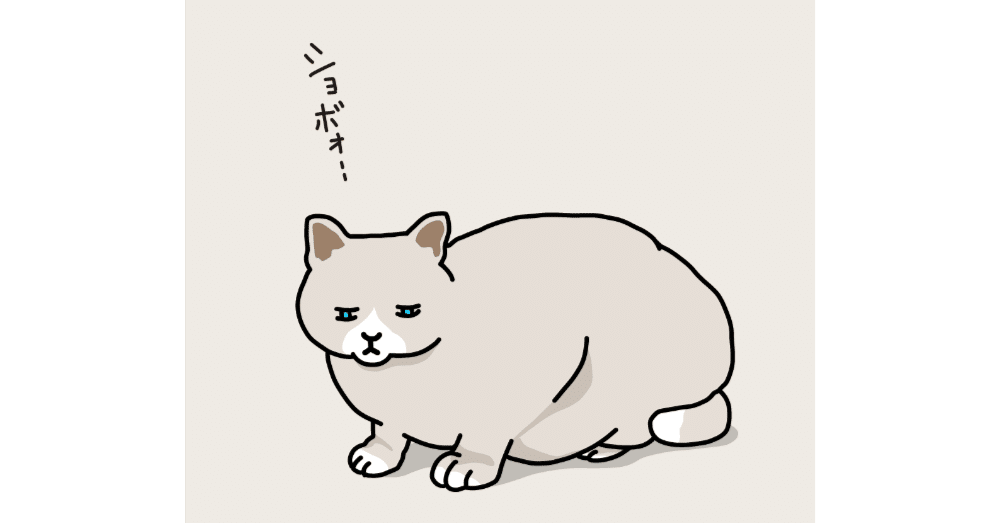

ストライク！
皆さんはこの言葉を聞いて、はたして何を思い浮かべるだろうか。
今は空前の大谷翔平フィーバーなのだから、もしかしたら野球の三振をイメージした人も多いかもしれない。でも、今回は違う。しなやかなフォームをもってボールを投げ、数メートル先の10あるピンを倒す球技。そう、ボウリングである。
9月上旬。コロナ渦以来の部内レクリエーションが行われる。今年は、最近職場の近くに大型のボウリング場がオープンしたこともあってか、50人を超える規模のボウリング大会に。
ちなみにここ20年ほどは、これか宿泊を伴う社員旅行だったので、内心束縛時間の少ない方になってホッとしていた。本当に冷たい男である。
学生の頃に数回遊んだことがある程度だったので久々の球技に胸を高鳴らせていると、今回の社内レク幹事である先輩社員がコミュニケーションツールにある投稿をしていた。
「ご自身のスコアと優勝チームを予想して豪華景品を当てよう！」
雑誌の裏表紙やWeb広告なんかでよく見かける、いわば既視感のある台詞。
その文言の下にはGoogle Formのリンクが貼られており、どうやらそこで前述の2つの予想を入力するらしい。
「2ゲームやっての合計スコアか……まあ、200はいくっしょ！」
意気揚々と用意された回答フォームに書き込む。ちなみに“200”という数字に特別な根拠はない。ただ、最初は感覚を取り戻せなくても、ゲームが進むにつれ持ち前の適応力で慣れていき、最終的にはそれくらいの数値に到達できると踏んだのだ。
そして、優勝チーム予想は社内事情に疎いこの僕である。誰がどのくらいの腕前なのかの知識など皆無だったため、目を瞑って回答のプルダウン式選択肢をクリックし回答。こちらは正直、当たったらラッキー程度のものだった。
それからまもなくして、レクリエーション当日を迎えた。
職場から歩いて10分程度の場所だったので、同僚たちと談笑しつつ会場に向かっていたら、あっという間に現地に到着。おお！ 確かに大きなボウリング場だ！
ボウリング自体は好きでも嫌いでもないけれど、そのスケールに圧倒された僕のやる気スイッチは自然とONに切り替わっていく。
そして、肝心のスコアだが、これはもう結果からお伝えしたい。
えー下記が2024年9月時点の海人最新スコアです。どうぞご査収ください。
【1ゲーム目】47
【2ゲーム目】50
【全ゲーム合計】97
「は？ ウソでしょ！？」
「10フレーム投げてないだけだよね？」
「怪我かなんかで満身創痍だったからだよな！？」
「コイツ……終わってる」
様々な読者の声が聞こえてきたような気がしたが、今回だけは構わず進めますね♪
ゴホン！ えっと、こちらのスコア……ガチです(白目)。
そして、僕の健康状態はこれ以上ないほどに万全、もちろん2ゲームとも10フレーム全部投げさせていただきました(⸝⸝⸝´꒳`⸝⸝⸝)ﾃﾍｯ
「うわぁ、本当だったんだ」
「解散。予想スコアの半分以下はさすがにない」
「心配して損した。おつかれ、今までありがとな」
「やっぱりコイツ……終わってる」
僕「大変申し訳ありませんでした🙇🏻」
その瞬間は、「なるようになる」が口癖のこの僕もさすがにショックを受けたみたいで、証拠となり得るスコアボードすら撮影し忘れてしまいました。ノンフィクションライターとして本当に失格です(いつからその職に就いた？)
「ご自身の結果について、率直な受け止めを教えてください」
「えー衝撃的なスコアで連日世間を騒がしておられますが、今の心境は？」
「心底見損ないました。どうかこの場で、生涯ボウリング場には姿を見せないことをお約束ください」
｢終わってる人間に聞きたいことなどない｣
気づけば、僕は記者の波に飲み込まれていた。体の節々にマイクが当たり、そのすべてが不快な感触で包まれる。
「ちょっと、どいてください！ 先を急いでいるんです！」
そうお願いしたところで、申請が素直に受け入れられるわけもない。だから僕はやむなしに立ち止まり、多くの記者に向かって言った。
「おい！ お前みたいな人間が200もとれるわけがなかろう！ もしタイムトラベルが可能なら、過去の自分にそう言ってやりたいです」
案の定茶番を挟んでしまったが、実際問題ガーターばかりが続くと、ボールが真っ直ぐ飛ぶかどうかはもはや問題ではない。それを投げ終わった後の振り返りざまに待ち構えるチームメイトの浮かない顔にどうやって対応すればいいのか、ただただ気を揉むことになるのである。
最初のうちは「よもや慣れてないのかな？」といった優しい表情を全員が浮かべてくれているが、5フレーム連続ガーターになると様子は一変。
僕お得意の、手のひらを合わせて「すみません～！」と言って頭を掻いてみせるスタイルに効果などあるはずもなく、「ええ加減にせえよ！」といった鋭いまなこで一瞥されるだけなのだ。(今思えば、そんな環境でよく2ゲームも投げ切ったな……笑)
｢時よ、はよ過ぎ去っておくれ！｣と願いながら、ようやく地獄のボウリング大会が終わると、今度は和風居酒屋での懇親会。
僕は数時間前の大失態を謝りながら、やはり心根は優しい人たちだ、さっきまでの険悪な雰囲気はどこへやら、それはそれは楽しい歓談に混ぜてもらっていた。
そんな時、不意に幹事が声を上げた。
どうやら、今回のボウリング大会における最高スコアと最低スコアの両獲得者、そしてスコア予想ぴったり賞と優勝チームの発表&優勝チーム予想を当てた者を発表するというのだ。
「いいぞー！」
ああ。いつもはあんなにムスっとしている部長があんな赤ら顔に。
彼が座るテーブルを確認してみると、社内でも酒豪で名が通っている社員の顔が見えた。ありゃ、だいぶ飲まされてるな。可哀想に。
「Hoooo！」
その直後唐突に大声を出したのは、いつもは真面目な30代半ばの先輩。あの人は酔うと陽キャになるのか。ふむふむ。
「まずは最高スコアです！ ずばり、2ゲーム目に242を叩き出した☆☆さん！」
ちょっとした人間観察をしている間にも発表は進む。そのアナウンスがあるやいなや、ところどころで「キャー！」という黄色い歓声が上がる。
それもそのはず、彼は社内でも随一の若手イケメン社員。そんな人物がこの大会で結果まで残したのだから、これはもう絵に描いたようなヒーローなのである。
そんな英雄にはやはり余裕もある。多くの歓声にも爽やかな笑顔を振り撒いて、「運がよかっただけです」と謙遜。こりゃ嫉妬する気も起きない完璧人間や……！
「一方、最低スコアですが……」
ヒーローインタビュー直後に敗北チームの監督にマイクを向けるような低い声で、それはまるであまりいい発表ではないことを暗に聴衆に伝えながら言葉を続けた。
「さすがに下には下がいるやろ」と思っていた矢先、自分の名前が呼ばれてしまう。
いたるところで聞こえる苦笑を受け、思わず頭に右手をやって「それほどでも」みたいな雰囲気でリアクション。「褒められてないぞー」とおちゃらけた声が耳に届く。
その和やかな様子を察したのか、幹事もこの雰囲気なら言っても大丈夫だろうといった顔で、「ちなみに海人くんのスコアは、記録が残っている中でも史上最低です」と付け加えてみせた。
「もうやめて！ とっくに海人のライフはゼロよ！」(唐突な遊戯王ネタですみません)と心で叫びながら、僕は晒し者と化したこの一瞬を精一杯やり過ごすほかなかったのだ。
「いいぞー！ もっとやれー！」
ああ。部長は完全にご乱心だ。いっそのこと、僕もあれくらい酔っていればよかったぜ……。
ちなみにスコア予想ぴったり賞に該当者はいなかったが、惜しくも1違いの人が数人いて、その時ばかりは温かな拍手に包まれていた。こういう雰囲気ってやっぱりいいよね♪
「そして、次で最後の発表です。なんと今回優勝したチームを当てた人が、この中に1人だけいますので、優勝チームとその予想者を一緒に発表しますね！」
話題が移り変わり、なんとか時間をやり過ごした僕は胸を撫で下ろす。
やっぱり最後は明るい話題で終わろう！ それがみんなのためでもあるんだから！
幹事はひと呼吸置き、そして息を決したように言った。
「優勝はチーム5！ そして、優勝を見事当てたのは海人くん！」
「えっ？」(心の声)
「いいぞー！ もっともっとだ！」「Huuuu！」「ギャー！」実に様々な声が上がった。
店内はもちろん優勝したチーム5の面々を祝福するムードだったが、僕と同じ料理を囲んでいたチームメイトたちは「あっ、コイツちゃっかり勝ち馬に乗りやがった」といったおめめをしていた……えっと、こんなオチってリアルにあるの？(現に起きている)
「では最後に。優勝チームを当てた海人くん、一言どうぞ！」
興奮気味に優勝インタビューに応えた面々のもとを去り、こちらにやってきた幹事からミニマイクを渡されてしまう。
考えろ、考えるんだ、海人！ 今後の会社員生活にもしかしたら影響があるかもしれんのだから、みんながハッピーになるスピーチで締め括るんだ！
「いやぁ、ありがたく思います。僕のボウリングでの腕前は自分でさえ信用ならないものでしたが、優勝されたチームの皆様のことは信じることができてよかったです」
史上最低スコアを叩き出したプレーヤーが、唯一優勝チームを当てた人間としてインタビューに応えている様子を、みんなこれ以上ないくらい困惑した顔で聞いている。
ああ、もうダメ。完全に「次回『海人死す』デュエルスタンバイ！」状態なのである(だから遊戯王ネタやめろって！)。
「僕の話を聞いても、恐らく“ボウリング”(boring/英語で「退屈」)だと思うので、この辺りで終わります。おあとがよろしいようで！」
ガーター！
野球の審判が「ストライク！」と叫ぶくらいの声量でそう声を上げるのが聞こえた気がした。
翔平、あとは任せる！ 頼むから、早くベンチに戻らせてくれ！(泣)
……ちなみに勝ち馬野郎の海人は、優勝チームを当てた景品として5,000円分の食事券をゲットしましたとさ。今度いっぱい食べてやるぞ～！